accutraveltimefractionstate, accutraveltimefractionflux, accutraveltimefractionremoved¶
accutraveltimefractionstate, accutraveltimefractionflux, accutraveltimefractionremoved
Transports a fraction of material downstream over a distance dependent on a given velocity.
Operation¶
Notes¶
Examples¶
- • pcrcalcbindingState3_1 = State3_1.map;Flux3_1 = Flux3_1.map;Removed3_1 = Removed3_1.map;Ldd3 = Ldd3.map;Material3_1 = Material3_1.map;Velocity3_1 = Velocity3_1.map;initialState3_1, Flux3_1 =accutraveltimefractionstate,accutraveltimefractionflux(Ldd3,Material3_1,Velocity3_1, 0.5);Removed3_1 = accutraveltimefractionremoved(Ldd3,Material3_1,Velocity3_1, 0.5);• pythonLdd3 = readmap(“Ldd3.map”)Material3_1 = readmap(“Material3_1.map”)Velocity3_1 = readmap(“Velocity3_1.map”)State3_1 = accutraveltimefractionstate(Ldd3,Material3_1,Velocity3_1, 0.5)Flux3_1 = accutraveltimefractionflux(Ldd3,Material3_1,Velocity3_1, 0.5)Removed3_1 = accutraveltimefractionremoved(Ldd3,Material3_1,Velocity3_1, 0.5)
State3_1.map Flux3_1.map Removed3_1.map Ldd3.map Material3_1.map Velocity3_1.map 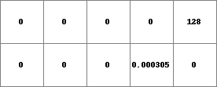 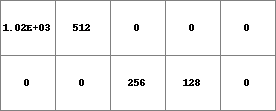 
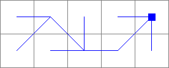 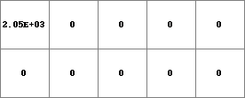 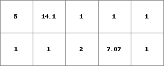 - • pcrcalcbindingState3_2 = State3_2.map;Flux3_2 = Flux3_2.map;Removed3_2 = Removed3_2.map;Ldd3 = Ldd3.map;Material3_1 = Material3_1.map;Velocity3_2 = Velocity3_2.map;initialState3_2, Flux3_2 =accutraveltimefractionstate,accutraveltimefractionflux(Ldd3,Material3_1,Velocity3_2, 0.5);Removed3_2 = accutraveltimefractionremoved(Ldd3,Material3_1,Velocity3_2, 0.5);• pythonLdd3 = readmap(“Ldd3.map”)Material3_1 = readmap(“Material3_1.map”)Velocity3_2 = readmap(“Velocity3_2.map”)State3_2 = accutraveltimefractionstate(Ldd3,Material3_1,Velocity3_2, 0.5)Flux3_2 = accutraveltimefractionflux(Ldd3,Material3_1,Velocity3_2, 0.5)Removed3_2 = accutraveltimefractionremoved(Ldd3,Material3_1,Velocity3_2, 0.5)
State3_2.map Flux3_2.map Removed3_2.map Ldd3.map Material3_1.map Velocity3_2.map 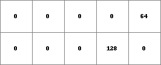 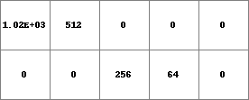 
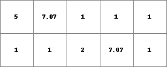 - • pcrcalcbindingState1_4 = State1_4.map;Flux1_4 = Flux1_4.map;Removed1_4 = Removed1_4.map;Ldd1 = Ldd1.map;Material1_3 = Material1_3.map;Velocity1_4 = Velocity1_4.map;Fraction1_3 = Fraction1_3.map;initialState1_4, Flux1_4 =accutraveltimefractionstate,accutraveltimefractionflux(Ldd1,Material1_3,Velocity1_4, Fraction1_3);Removed1_4 = accutraveltimefractionremoved(Ldd1,Material1_3,Velocity1_4, Fraction1_3);• pythonLdd1 = readmap(“Ldd1.map”)Material1_3 = readmap(“Material1_3.map”)Velocity1_4 = readmap(“Velocity1_4.map”)Fraction1_3 = readmap(“Fraction1_3.map”)State1_4 = accutraveltimefractionstate(Ldd1,Material1_3,Velocity1_4, Fraction1_3)Flux1_4 = accutraveltimefractionflux(Ldd1,Material1_3,Velocity1_4, Fraction1_3)Removed1_4 = accutraveltimefractionremoved(Ldd1,Material1_3,Velocity1_4, Fraction1_3)
State1_4.map Flux1_4.map Removed1_4.map Ldd1.map Material1_3.map Velocity1_4.map Fraction1_3.map 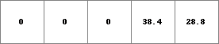 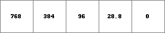 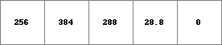 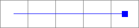 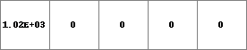 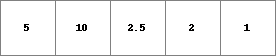 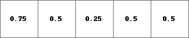 - • pcrcalcbindingState1_5 = State1_5.map;Flux1_5 = Flux1_5.map;Removed1_5 = Removed1_5.map;Ldd1 = Ldd1.map;Material1_3 = Material1_3.map;Velocity1_5 = Velocity1_5.map;initialState1_5, Flux1_5 = accutraveltimefractionstate,accutraveltimefractionflux(Ldd1,Material1_3,Velocity1_5, 1);Removed1_5 = accutraveltimefractionremoved(Ldd1,Material1_3,Velocity1_5, 1);• pythonLdd1 = readmap(“Ldd1.map”)Material1_3 = readmap(“Material1_3.map”)Velocity1_5 = readmap(“Velocity1_5.map”)State1_5 = accutraveltimefractionstate(Ldd1,Material1_3,Velocity1_5, 1)Flux1_5 = accutraveltimefractionflux(Ldd1,Material1_3,Velocity1_5, 1)Removed1_5 = accutraveltimefractionremoved(Ldd1,Material1_3,Velocity1_5, 1)
State1_5.map Flux1_5.map Removed1_5.map Ldd1.map Material1_3.map Velocity1_5.map 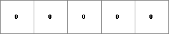 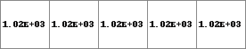 
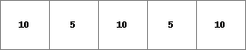 - • pcrcalcbindingState1_2 = State1_2.map;Flux1_2 = Flux1_2.map;Removed1_2 = Removed1_2.map;Ldd1 = Ldd1.map;Material1_2 = Material1_2.map;Velocity1_2 = Velocity1_2.map;initialState1_2, Flux1_2 =accutraveltimefractionstate,accutraveltimefractionflux(Ldd1,Material1_2,Velocity1_2, 0.5);Removed1_2 = accutraveltimefractionremoved(Ldd1,Material1_2,Velocity1_2, 0.5);• pythonLdd1 = readmap(“Ldd1.map”)Material1_2 = readmap(“Material1_2.map”)Velocity1_2 = readmap(“Velocity1_2.map”)State1_2 = accutraveltimefractionstate(Ldd1,Material1_2,Velocity1_2, 0.5)Flux1_2 = accutraveltimefractionflux(Ldd1,Material1_2,Velocity1_2, 0.5)Removed1_2 = accutraveltimefractionremoved(Ldd1,Material1_2,Velocity1_2, 0.5)
State1_2.map Flux1_2.map Removed1_2.map Ldd1.map Material1_2.map Velocity1_2.map 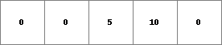 
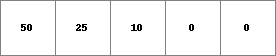 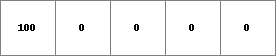 - • pcrcalcbindingState1_3 = State1_3.map;Flux1_3 = Flux1_3.map;Removed1_3 = Removed1_3.map;Ldd1 = Ldd1.map;Material1_3 = Material1_3.map;Velocity1_3 = Velocity1_3.map;Fraction1_3 = Fraction1_3.map;initialState1_3, Flux1_3 =accutraveltimefractionstate,accutraveltimefractionflux(Ldd1,Material1_3,Velocity1_3, Fraction1_3);Removed1_3 = accutraveltimefractionremoved(Ldd1,Material1_3,Velocity1_3, Fraction1_3);• pythonLdd1 = readmap(“Ldd1.map”)Material1_3 = readmap(“Material1_3.map”)Velocity1_3 = readmap(“Velocity1_3.map”)Fraction1_3 = readmap(“Fraction1_3.map”)State1_3 = accutraveltimefractionstate(Ldd1,Material1_3,Velocity1_3, Fraction1_3)Flux1_3 = accutraveltimefractionflux(Ldd1,Material1_3,Velocity1_3, Fraction1_3)Removed1_3 = accutraveltimefractionremoved(Ldd1,Material1_3,Velocity1_3, Fraction1_3)
State1_3.map Flux1_3.map Removed1_3.map Ldd1.map Material1_3.map Velocity1_3.map Fraction1_3.map 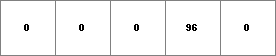 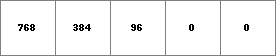 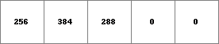 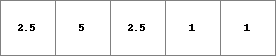 - • pcrcalcbindingState1_1 = State1_1.map;Flux1_1 = Flux1_1.map;Removed1_1 = Removed1_1.map;Ldd1 = Ldd1.map;Material1_2 = Material1_2.map;Velocity1_1 = Velocity1_1.map;initialState1_1, Flux1_1 =accutraveltimefractionstate,accutraveltimefractionflux(Ldd1,Material1_2,Velocity1_1, 0.5);Removed1_1 = accutraveltimefractionremoved(Ldd1,Material1_2,Velocity1_1, 0.5);• pythonLdd1 = readmap(“Ldd1.map”)Material1_2 = readmap(“Material1_2.map”)Velocity1_1 = readmap(“Velocity1_1.map”)State1_1 = accutraveltimefractionstate(Ldd1,Material1_2,Velocity1_1, 0.5)Flux1_1 = accutraveltimefractionflux(Ldd1,Material1_2,Velocity1_1, 0.5)Removed1_1 = accutraveltimefractionremoved(Ldd1,Material1_2,Velocity1_1, 0.5)
State1_1.map Flux1_1.map Removed1_1.map Ldd1.map Material1_2.map Velocity1_1.map 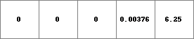 
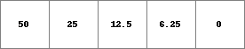 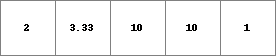 - • pcrcalcbindingState2_1 = State2_1.map;Flux2_1 = Flux2_1.map;Removed2_1 = Removed2_1.map;Ldd2 = Ldd2.map;Material2_1 = Material2_1.map;Velocity2_1 = Velocity2_1.map;initialState2_1, Flux2_1 =accutraveltimefractionstate,accutraveltimefractionflux(Ldd2,Material2_1,Velocity2_1, 0.5);Removed2_1 = accutraveltimefractionremoved(Ldd2,Material2_1,Velocity2_1, 0.5)• pythonLdd2 = readmap(“Ldd2.map”)Material2_1 = readmap(“Material2_1.map”)Velocity2_1 = readmap(“Velocity2_1.map”)State2_1 = accutraveltimefractionstate(Ldd2,Material2_1,Velocity2_1, 0.5)Flux2_1 = accutraveltimefractionflux(Ldd2,Material2_1,Velocity2_1, 0.5)Removed2_1 = accutraveltimefractionremoved(Ldd2,Material2_1,Velocity2_1, 0.5)
State2_1.map Flux2_1.map Removed2_1.map Ldd2.map Material2_1.map Velocity2_1.map 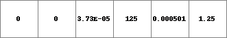 
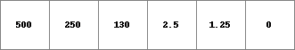 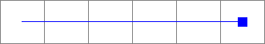 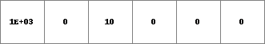 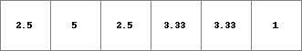 - • pcrcalcbindingState2_3 = State2_3.map;Flux2_3 = Flux2_3.map;Removed2_3 = Removed2_3.map;Ldd2 = Ldd2.map;Material2_2 = Material2_2.map;Velocity2_3 = Velocity2_3.map;Fraction2_3 = Fraction2_3.map;initialState2_3 = accutraveltimefractionstate(Ldd2,Material2_2,Velocity2_3, Fraction2_3);Flux2_3 = accutraveltimefractionflux(Ldd2,Material2_2,Velocity2_3, Fraction2_3);Removed2_3 = accutraveltimefractionremoved(Ldd2,Material2_2,Velocity2_3, Fraction2_3);• pythonLdd2 = readmap(“Ldd2.map”)Material2_2 = readmap(“Material2_2.map”)Velocity2_3 = readmap(“Velocity2_3.map”)Fraction2_3 = readmap(“Fraction2_3.map”)State2_3 = accutraveltimefractionstate(Ldd2,Material2_2,Velocity2_3, Fraction2_3)Flux2_3 = accutraveltimefractionflux(Ldd2,Material2_2,Velocity2_3, Fraction2_3)Removed2_3 = accutraveltimefractionremoved(Ldd2,Material2_2,Velocity2_3, Fraction2_3)
State2_3.map Flux2_3.map Removed2_3.map Ldd2.map Material2_2.map Velocity2_3.map Fraction2_3.map 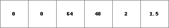 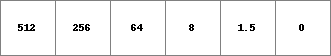 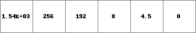 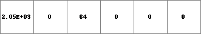 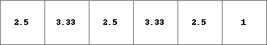 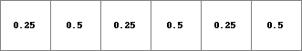 - • pcrcalcbindingState2_2 = State2_2.map;Flux2_2 = Flux2_2.map;Removed2_2 = Removed2_2.map;Ldd2 = Ldd2.map;Material2_2 = Material2_2.map;Velocity2_2 = Velocity2_2.map;initialState2_2, Flux2_2 =accutraveltimefractionstate,accutraveltimefractionflux(Ldd2,Material2_2,Velocity2_2, 0.5);Removed2_2 = accutraveltimefractionremoved(Ldd2,Material2_2,Velocity2_2, 0.5)• pythonLdd2 = readmap(“Ldd2.map”)Material2_2 = readmap(“Material2_2.map”)Velocity2_2 = readmap(“Velocity2_2.map”)State2_2 = accutraveltimefractionstate(Ldd2,Material2_2,Velocity2_2, 0.5)Flux2_2 = accutraveltimefractionflux(Ldd2,Material2_2,Velocity2_2, 0.5)Removed2_2 = accutraveltimefractionremoved(Ldd2,Material2_2,Velocity2_2, 0.5)
State2_2.map Flux2_2.map Removed2_2.map Ldd2.map Material2_2.map Velocity2_2.map 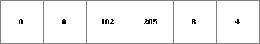 
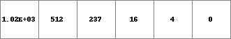 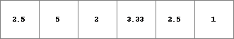 - • pcrcalcbindingState2_4 = State2_4.map;Flux2_4 = Flux2_4.map;Removed2_4 = Removed2_4.map;Ldd2 = Ldd2.map;Material2_2 = Material2_2.map;Velocity2_4 = Velocity2_4.map;Fraction2_3 = Fraction2_3.map;initialState2_4, Flux2_4 =accutraveltimefractionstate,accutraveltimefractionflux(Ldd2,Material2_2,Velocity2_4, Fraction2_3);Removed2_4 = accutraveltimefractionremoved(Ldd2,Material2_2,Velocity2_4, Fraction2_3);• pythonLdd2 = readmap(“Ldd2.map”)Material2_2 = readmap(“Material2_2.map”)Velocity2_4 = readmap(“Velocity2_4.map”)Fraction2_3 = readmap(“Fraction2_3.map”)State2_4 = accutraveltimefractionstate(Ldd2,Material2_2,Velocity2_4, Fraction2_3)Flux2_4 = accutraveltimefractionflux(Ldd2,Material2_2,Velocity2_4, Fraction2_3)Removed2_4 = accutraveltimefractionremoved(Ldd2,Material2_2,Velocity2_4, Fraction2_3)
State2_4.map Flux2_4.map Removed2_4.map Ldd2.map Material2_2.map Velocity2_4.map Fraction2_3.map 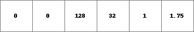 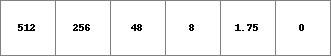 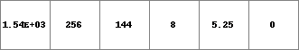 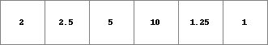 - • pcrcalcbindingState4_2 = State4_2.map;Flux4_2 = Flux4_2.map;Removed4_2 = Removed4_2.map;Ldd3 = Ldd3.map;Material4_1 = Material4_1.map;Velocity4_2 = Velocity4_2.map;initialState4_2, Flux4_2 =accutraveltimefractionstate,accutraveltimefractionflux(Ldd3,Material4_1,Velocity4_2, 0.5);Removed4_2 = accutraveltimefractionremoved(Ldd3,Material4_1,Velocity4_2, 0.5);• pythonLdd3 = readmap(“Ldd3.map”)Material4_1 = readmap(“Material4_1.map”)Velocity4_2 = readmap(“Velocity4_2.map”)State4_2 = accutraveltimefractionstate(Ldd3,Material4_1,Velocity4_2, 0.5)Flux4_2 = accutraveltimefractionflux(Ldd3,Material4_1,Velocity4_2, 0.5)Removed4_2 = accutraveltimefractionremoved(Ldd3,Material4_1,Velocity4_2, 0.5)
State4_2.map Flux4_2.map Removed4_2.map Ldd3.map Material4_1.map Velocity4_2.map 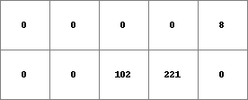 
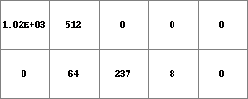 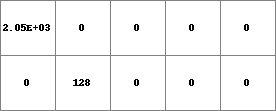 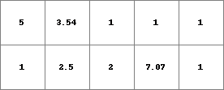 - • pcrcalcbindingState4_1 = State4_1.map;Flux4_1 = Flux4_1.map;Removed4_1 = Removed4_1.map;Ldd3 = Ldd3.map;Material4_1 = Material4_1.map;Velocity4_1 = Velocity4_1.map;initialState4_1, Flux4_1 =accutraveltimefractionstate,accutraveltimefractionflux(Ldd3,Material4_1,Velocity4_1, 0.5);Removed4_1 = accutraveltimefractionremoved(Ldd3,Material4_1,Velocity4_1, 0.5);• pythonLdd3 = readmap(“Ldd3.map”)Material4_1 = readmap(“Material4_1.map”)Velocity4_1 = readmap(“Velocity4_1.map”)State4_1 = accutraveltimefractionstate(Ldd3,Material4_1,Velocity4_1, 0.5)Flux4_1 = accutraveltimefractionflux(Ldd3,Material4_1,Velocity4_1, 0.5)Removed4_1 = accutraveltimefractionremoved(Ldd3,Material4_1,Velocity4_1, 0.5)
State4_1.map Flux4_1.map Removed4_1.map Ldd3.map Material4_1.map Velocity4_1.map